Analiza competitorilor din aria de servicii de sănătate
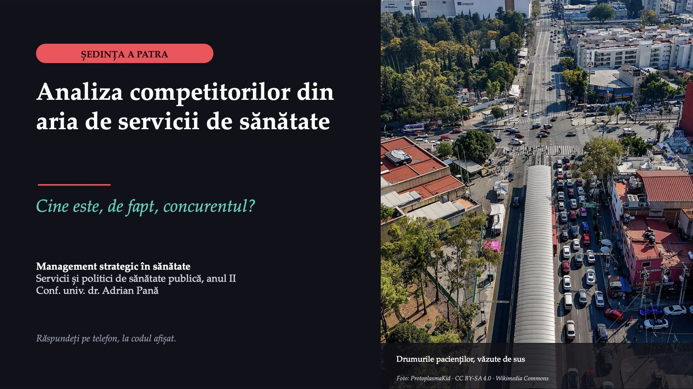
1 / 45Azi întrebarea se mută de la pacienți la cei care le oferă aceleași servicii. Cine sunt ei, cât de puternici sunt și ce poate face o organizație de sănătate pe care ei nu o pot copia?
Cu cine concurează farmacia din cartierul vostru?
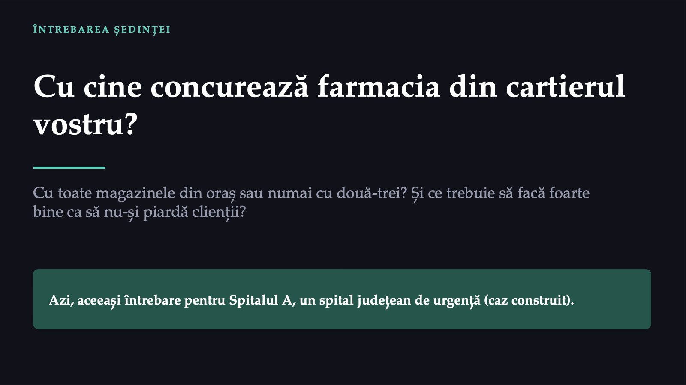
2 / 45Gândiți-vă la o farmacie, o cafenea sau o librărie din cartierul vostru. Cu cine concurează ea de fapt: cu toate magazinele din oraș sau numai cu două-trei? Și ce ar trebui să facă foarte bine ca să nu-și piardă clienții? Răspunsul vostru este punctul de plecare al ședinței.
Aria de servicii nu este una singură
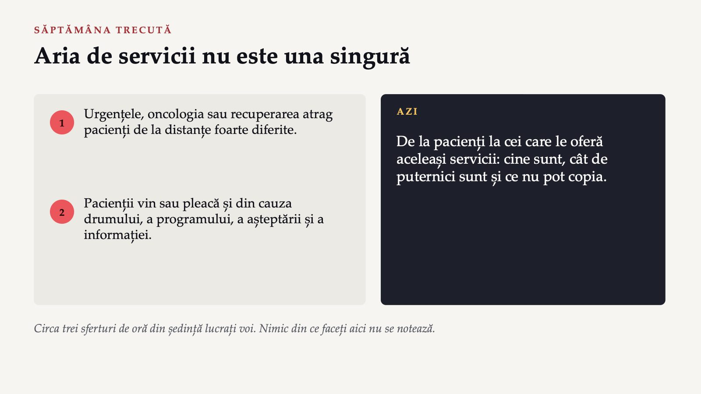
3 / 45Cursul trecut a arătat că aria de servicii nu este una singură pentru tot spitalul: urgențele, oncologia sau recuperarea atrag pacienți de la distanțe foarte diferite. Am văzut și de ce vin sau pleacă pacienții: din cauza nevoilor lor, dar și a drumului, a programului, a așteptării și a informației pe care le oferă furnizorii.
Spitalul A și fondul de dezvoltare
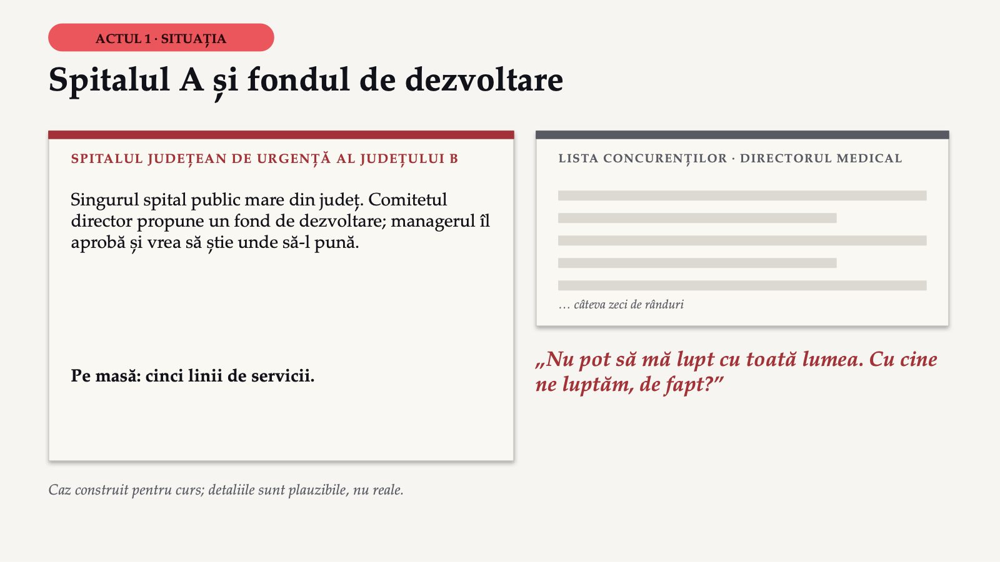
4 / 45Spitalul A este spitalul județean de urgență al Județului B, singurul spital public mare din județ. Comitetul director propune un fond de dezvoltare pentru anul viitor, iar managerul, care trebuie să-l aprobe, vrea să știe unde să-l pună. Directorul medical a adus și o listă a concurenților: toate unitățile sanitare din județ, publice și private. Managerul o pune deoparte: „Nu pot să mă lupt cu toată lumea. Cu cine ne luptăm, de fapt?”
Pe masa managerului
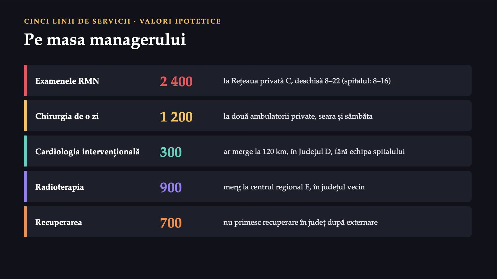
5 / 45Imagistica: Rețeaua privată C are în oraș două centre RMN deschise între 8 și 22, iar Spitalul A lucrează între 8 și 16. Cardiologia intervențională: Spitalul A este singurul centru din județ care dilată arterele inimii la orice oră. Radioterapia nu există în județ. La recuperare există numai câteva cabinete private în oraș.
Cine este concurentul Spitalului A?
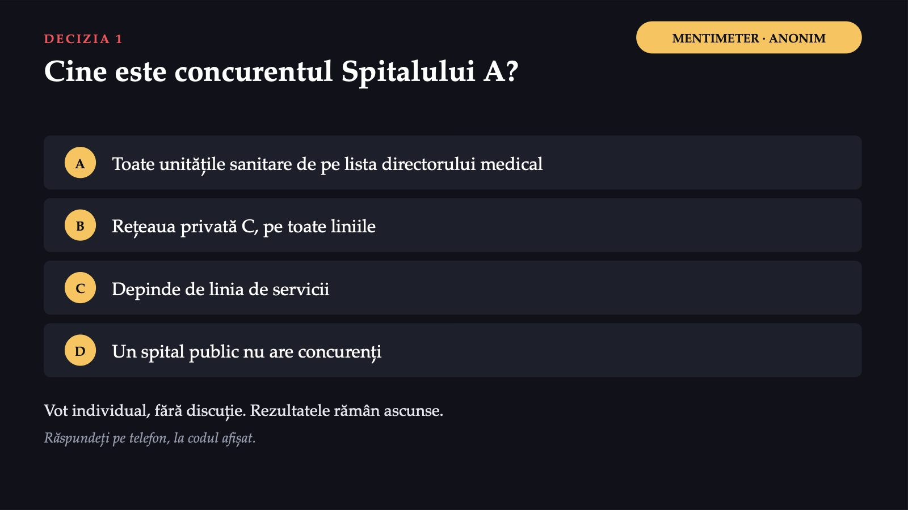
6 / 45Vot anonim pe telefon: cine este concurentul Spitalului A? O singură variantă.
Convingeți-l pe colegul care a votat altfel
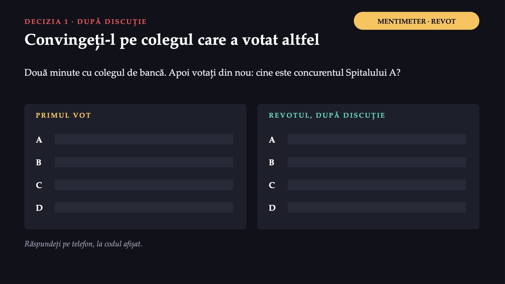
7 / 45Două minute de discuție cu colegul de bancă: convingeți-l pe cel care a votat altfel. Apoi votați din nou, pe același enunț.
Răspunsul apare după ședință
Răspunsul apare după ședință
Răspunsul apare după ședință
Răspunsul apare după ședință
Cinci presiuni
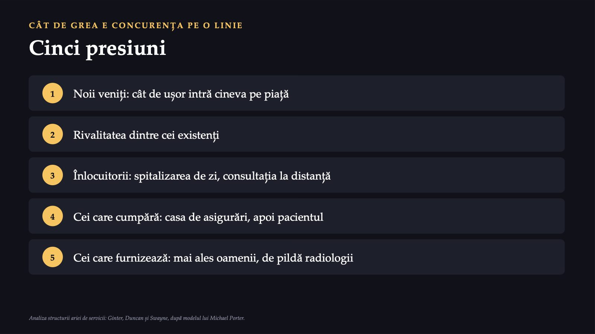
10 / 45Intensitatea concurenței depinde de cinci presiuni: amenințarea noilor veniți, rivalitatea dintre organizațiile existente, amenințarea serviciilor care le pot înlocui pe cele actuale, puterea de negociere a celor care cumpără și a celor care furnizează resursele. În sănătatea din România, „cei care cumpără” sunt, în primul rând, casa de asigurări, iar „cei care furnizează” sunt, mai ales, oamenii.
Presiunile pe liniile Spitalului A
![CAZ CONSTRUIT Presiunile pe liniile Spitalului A Linia · Noii veniți · Rivalitatea · Înlocuitorii · Cumpără · Furnizează RMN · ușor: aparatul se cumpără · mare, un rival puternic · puțini · casa, pacientul · radiologii, căutați Chirurgia de o zi · ușor pentru ambulatorii · mare: program, așteptare · internarea clasică · casa · chirurgii, anesteziștii Cardiologia · greu: echipă la orice oră · mică în județ · niciunul în infarct · casa · echipa de gardă Radioterapia · foarte greu: investiție, personal rar · regională · puțini · casa · fizicienii medicali, medicii Recuperarea · ușor: cabinete mici · mică · îngrijirea la domiciliu · casa, familia · kinetoterapeuții Casa = casa de asigurări.](diapozitive/C04/011.jpg) 11 / 45
11 / 45Pe linia RMN se intră ușor, pentru că aparatul se cumpără, iar radiologii sunt căutați de toți. La cardiologia intervențională se intră greu: e nevoie de o echipă la orice oră. La radioterapie se intră foarte greu: investiția e mare, iar personalul e rar.
Spitalul A, o lună mai târziu
 12 / 45
12 / 45Rețeaua privată C anunță un al treilea centru de imagistică și un ambulatoriu de cardiologie. Doi dintre radiologii Spitalului A au primit oferte de la C. Complicația atinge trei presiuni deodată: rivalitatea crește, puterea celor care furnizează crește, iar întrebarea managerului e una de alegere între linii: unde poate spitalul câștiga, unde poate doar ține pasul și unde nu merită să intre în cursă.
Profilul Rețelei private C
 13 / 45
13 / 45Al treilea pas al analizei este cunoașterea concurenților: punctele lor tari și slabe. În practică, pentru un spital din România, sursele sunt site-urile furnizorilor, programul afișat, lista furnizorilor aflați în contract cu casa de asigurări, presa locală, medicii de familie care trimit pacienți și pacienții înșiși.
Factorii critici de succes
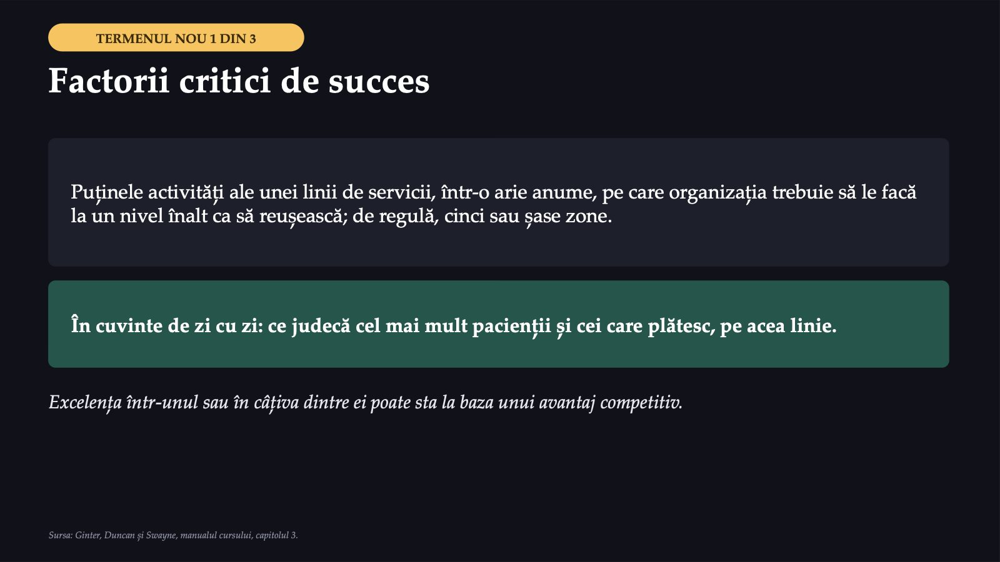
14 / 45Pe fiecare linie de servicii, câștigă cine face foarte bine câteva lucruri. Manualul le numește factori critici de succes: un număr mic de activități pe care organizația trebuie să le facă la un nivel înalt ca să reușească. În cuvinte de zi cu zi: puținele lucruri pe care pacienții și cei care plătesc le judecă cel mai mult pe acea linie de servicii.
Fiecare linie are alți factori
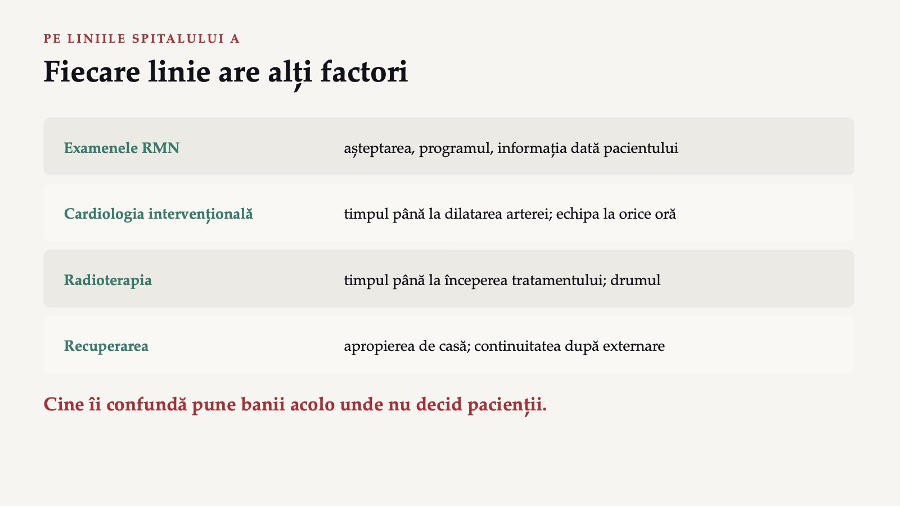
15 / 45Pe liniile Spitalului A, factorii critici de succes diferă. La cardiologia intervențională contează timpul de la primul contact cu pacientul până la dilatarea arterei și disponibilitatea echipei la orice oră. Cine îi confundă pune banii acolo unde nu decid pacienții.
Grupul strategic
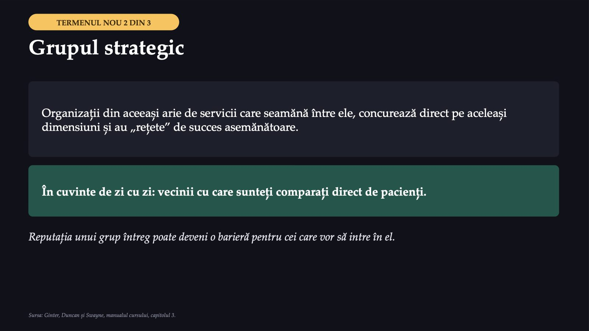
16 / 45Nu toți concurenții de pe aceeași linie sunt la fel de apropiați. Manualul îi grupează după rețetele pe care le urmează. În cuvinte de zi cu zi: vecinii cu care sunteți comparați direct de pacienți, pentru că oferă aproape același lucru în același fel.
Două axe, doi factori critici de succes
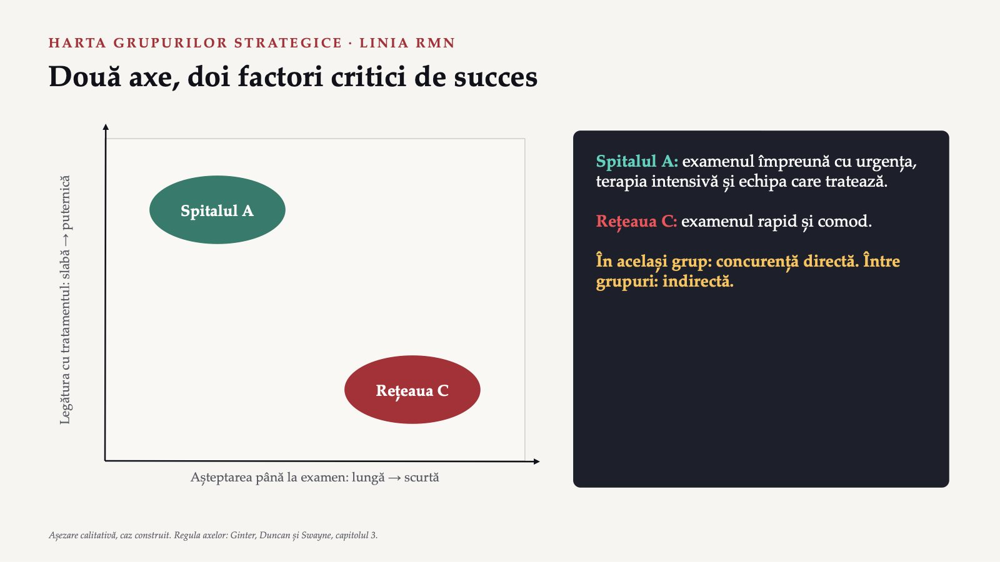
17 / 45Grupurile strategice se desenează pe o hartă cu două axe. Manualul recomandă ca axele să fie doi factori critici de succes; pe linia RMN, de exemplu, durata așteptării și legătura examenului cu tratamentul care urmează. Membrii aceluiași grup sunt concurenți direcți, iar cu membrii altor grupuri concurează numai indirect.
Resurse, activități, capabilități
 18 / 45
18 / 45Resursele tangibile, adică terenul, clădirile, echipamentele, banii și personalul, se obțin mai ușor decât cele intangibile; reputația, imaginea și cunoștințele se construiesc în timp, prin experiență. Tocmai componentele intangibile ale competențelor de bază le fac greu de copiat.
Testul VRIO
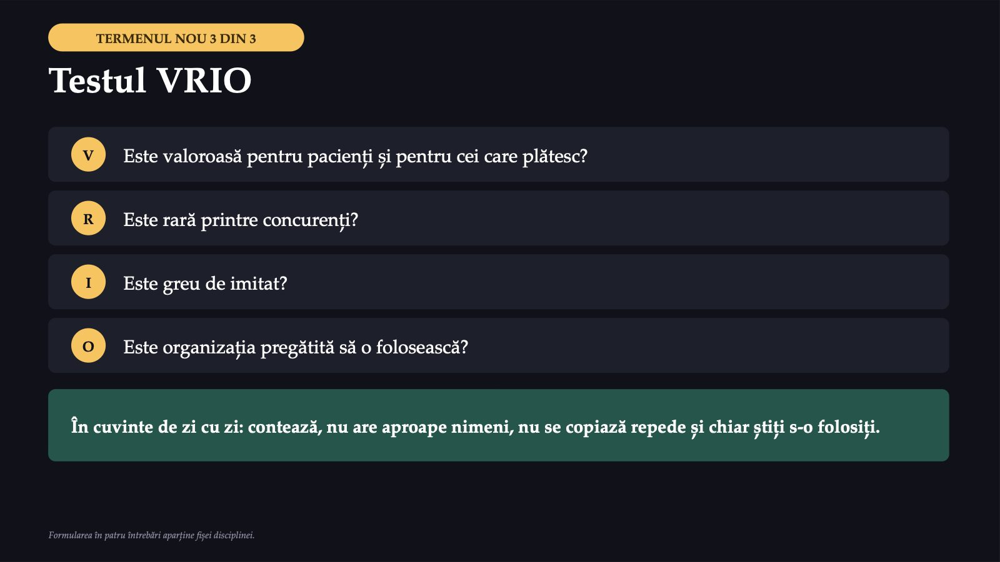
19 / 45Fișa disciplinei numește cadrul resurselor prin patru criterii: valoare, raritate, imitabilitate și organizare. Numele testului vine de la inițialele lor. În cuvinte de zi cu zi: ce aveți voi, contează, nu are aproape nimeni, nu se poate copia repede și chiar știți să folosiți.
O scară construită pentru curs
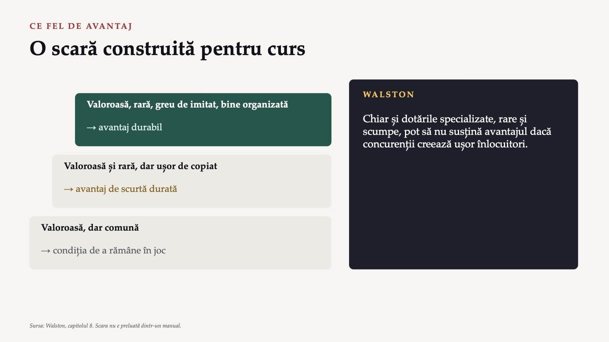
20 / 45Walston adaugă că și cunoștințele clinice sau dotările specializate, chiar rare și scumpe, pot să nu susțină avantajul dacă concurenții creează ușor înlocuitori. Pornind de aici, acest curs propune pentru discuție o scară simplă, construită pentru curs: răspunsul la test nu e „da” sau „nu” pentru toată resursa, ci o concluzie despre ce fel de avantaj poate da ea.
Care resursă poate susține un avantaj durabil?
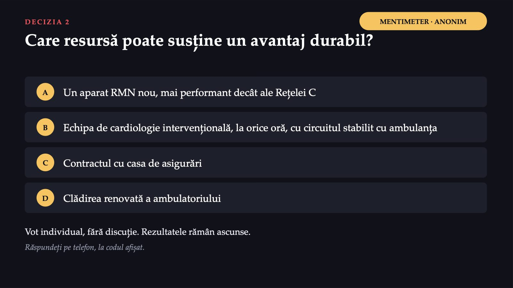
21 / 45Vot anonim pe telefon: care resursă a Spitalului A poate susține cel mai probabil un avantaj durabil față de concurenți? O singură variantă.
Convingeți-l pe colegul care a votat altfel
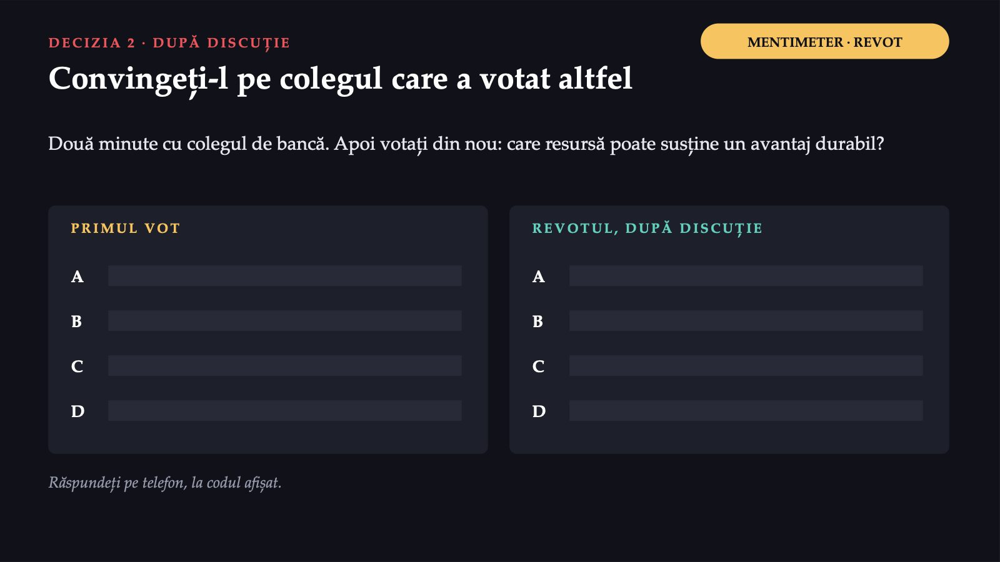
22 / 45Două minute de discuție cu colegul de bancă: convingeți-l pe cel care a votat altfel. Apoi votați din nou, pe același enunț.
Răspunsul apare după ședință
Răspunsul apare după ședință
Răspunsul apare după ședință
Răspunsul apare după ședință
Ce aduce fiecare punct
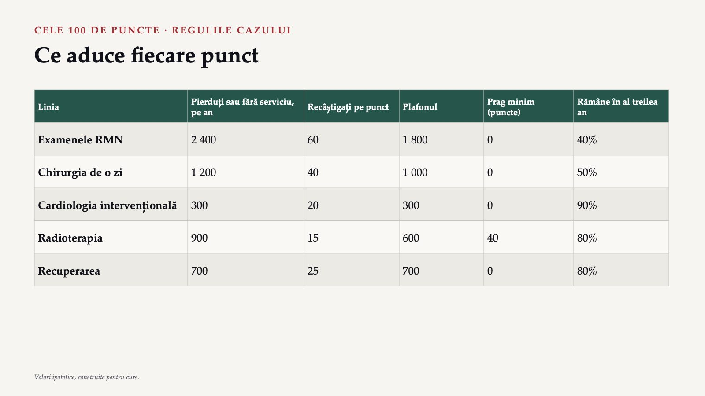
25 / 45Ca alocarea să aibă urmări, cazul are câteva reguli simple, construite pentru curs. La examenele RMN, fiecare punct aduce înapoi 60 de pacienți pe an, dar recâștigul se oprește la 1 800. La cardiologia intervențională, punctele nu aduc pacienți noi, ci păstrează echipa. La radioterapie, sub 40 de puncte nu se poate porni serviciul.
Împărțiți fondul de dezvoltare
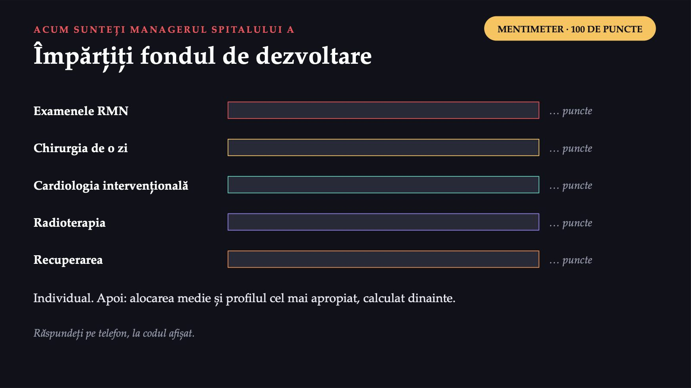
26 / 45Acum fiecare dintre voi devine managerul Spitalului A. Împărțiți fondul de dezvoltare al Spitalului A între cele cinci linii de servicii: examenele RMN, chirurgia de o zi, cardiologia intervențională, radioterapia și recuperarea.
Răspunsul apare după ședință
Răspunsul apare după ședință
Răspunsul apare după ședință
Răspunsul apare după ședință
Ce ați sacrificat fără să vă dați seama?
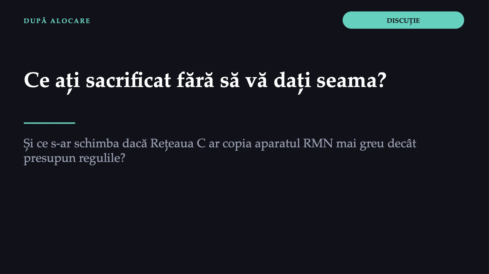
29 / 45Ce ați sacrificat fără să vă dați seama? Și ce s-ar schimba dacă Rețeaua C ar copia aparatul RMN mai greu decât presupun regulile?
Pauză
30 / 45Răspunsul apare după ședință
Răspunsul apare după ședință
Răspunsul apare după ședință
Răspunsul apare după ședință
Lanțul valorii în sănătate
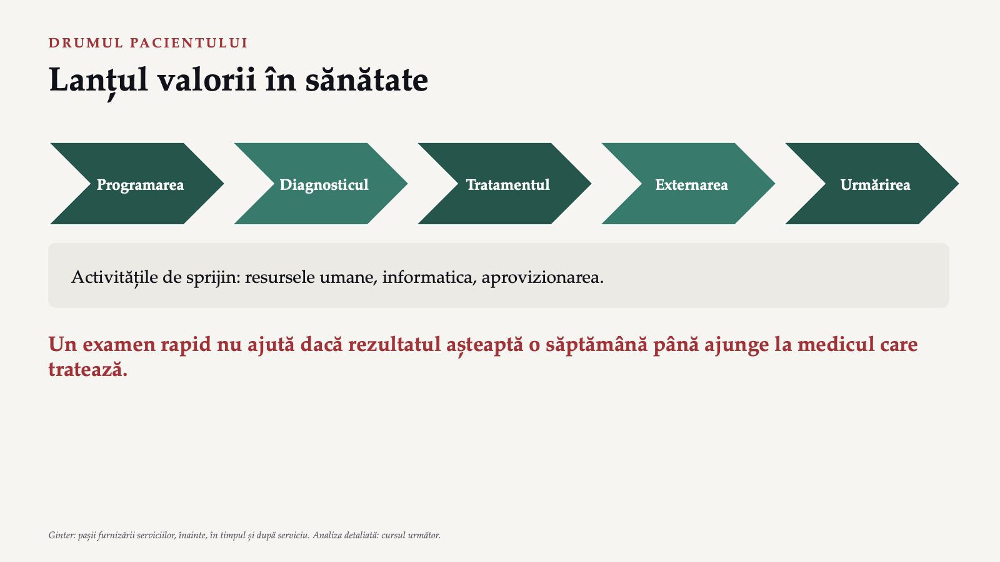
33 / 45Ideea lanțului valorii descompune o organizație de sănătate în activitățile prin care trece pacientul, de la programare și diagnostic la tratament, externare și urmărirea după externare, și în activitățile de sprijin. Avantajul vine din felul în care sunt executate aceste activități și din legăturile dintre ele.
„health outcomes achieved per dollar spent”
 34 / 45
34 / 45Profilul „ce nu se poate copia” nu e preferat pentru că aduce mai mulți pacienți, ci pentru ce primesc pacienții. Pentru managerul Spitalului A, asta înseamnă o întrebare diferită de cea a cotei de piață. Nu „câți pacienți am luat de la C?”, ci „ce rezultate obțin pacienții noștri și cu ce cost?”.
Structură, proces, rezultat
![CUM ȘTIE MANAGERUL PESTE UN AN Structură, proces, rezultat STRUCTURA cadrul îngrijirii și mijloacele ei De exemplu: echipa de gardă la orice oră PROCESUL îngrijirea însăși De exemplu: timpul până la dilatarea arterei REZULTATUL ce se întâmplă cu pacientul De exemplu: supraviețuirea la o lună Clasificarea lui Donabedian este cel mai folosit cadru pentru tipurile de indicatori de calitate. Cursul adaugă costul pe episodul de îngrijire. Observatorul European, volumul din 2019 despre calitatea îngrijirii; Donabedian, 1966.](diapozitive/C04/035.jpg) 35 / 45
35 / 45Cum ar ști managerul, peste un an, dacă alegerea a fost bună? Prin câțiva indicatori, aleși înainte și urmăriți regulat. Cele trei abordări ale evaluării calității apar la Donabedian încă din 1966: structura este cadrul îngrijirii și mijloacele ei, procesul este îngrijirea însăși, iar rezultatul este ce se întâmplă cu pacientul.
Spitalul public are deja indicatori
![ÎN ROMÂNIA Spitalul public are deja indicatori ORDINUL MINISTRULUI SĂNĂTĂȚII NR. 1384/2010 Indicatori de performanță în cinci categorii, în contractul de management. Printre cei de utilizare a serviciilor: • durata medie de spitalizare • rata de utilizare a paturilor • indicele de complexitate a cazurilor • ponderea spitalizărilor de zi Casa Națională de Asigurări de Sănătate publică indicatori pe fiecare spital public. Sunt indicatori operaționali. Pentru valoarea pentru pacient e nevoie și de rezultate pe fiecare linie.](diapozitive/C04/036.jpg) 36 / 45
36 / 45Managerul spitalului public are în contractul de management indicatori de performanță în cinci categorii, stabiliți prin Ordinul ministrului sănătății nr. 1384/2010. Acești indicatori sunt operaționali: arată cât de mult și cât de eficient lucrează spitalul. Pentru valoarea pentru pacient, managerul are nevoie și de indicatori de rezultat pe fiecare linie de servicii, pe care îi construiește el.
Câțiva indicatori pe liniile Spitalului A
![CAZ CONSTRUIT · EXEMPLELE CURSULUI Câțiva indicatori pe liniile Spitalului A Linia · Structura · Procesul · Rezultatul Cardiologia intervențională · echipa de gardă la orice oră · timpul până la dilatarea arterei · supraviețuirea la o lună Radioterapia · aparatele funcționale și personalul · timpul de la indicație la prima ședință · tratamentul planificat, terminat Recuperarea · locurile și kinetoterapeuții · timpul de la externare la prima ședință · pacientul se îngrijește singur Examenele RMN · orele de program pe săptămână · așteptarea până la examen · rezultatul ajuns la timp la medic](diapozitive/C04/037.jpg) 37 / 45
37 / 45Pentru Spitalul A, structura înseamnă, de exemplu, echipa de gardă la orice oră, procesul înseamnă timpul până la dilatarea arterei, iar rezultatul, supraviețuirea la o lună sau capacitatea de a se îngriji singur după recuperare.
Spitalul municipal M
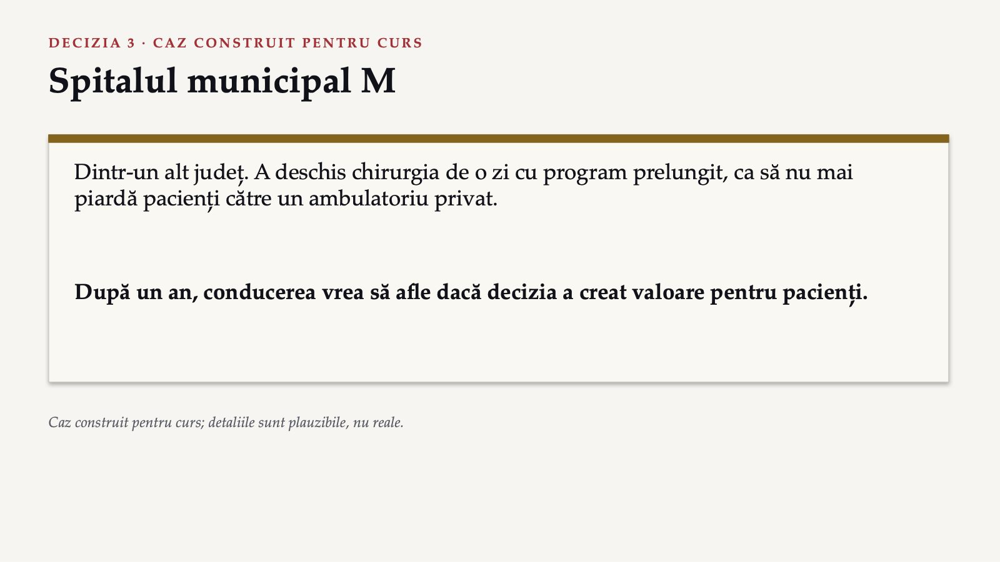
38 / 45Spitalul municipal M, dintr-un alt județ, a deschis chirurgia de o zi cu program prelungit, ca să nu mai piardă pacienți către un ambulatoriu privat. După un an, conducerea vrea să afle dacă decizia a creat valoare pentru pacienți.
Ce urmărește întâi conducerea Spitalului M?
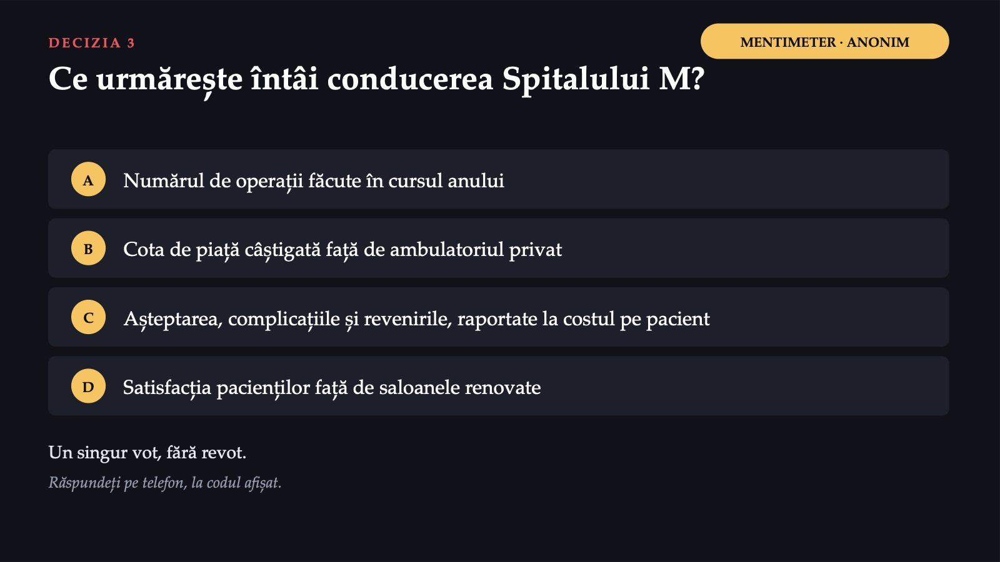
39 / 45Vot anonim pe telefon: ce ar trebui să urmărească întâi conducerea Spitalului M? O singură variantă.
Răspunsul apare după ședință
Răspunsul apare după ședință
Cei șapte pași ai analizei
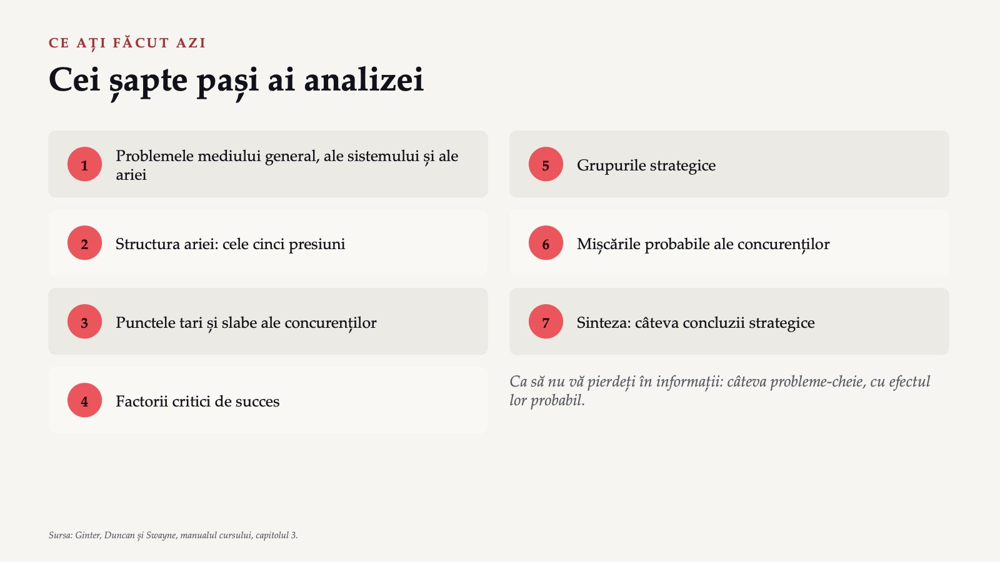
41 / 45Tot ce ați făcut azi urmează un proces descris de manual în șapte pași. Pasul al șaselea a apărut în actul 2: mișcările unui concurent se pot anticipa din punctele lui tari și slabe, din grupul strategic căruia îi aparține și din strategiile lui trecute.
Zece întrebări despre ideile ședinței
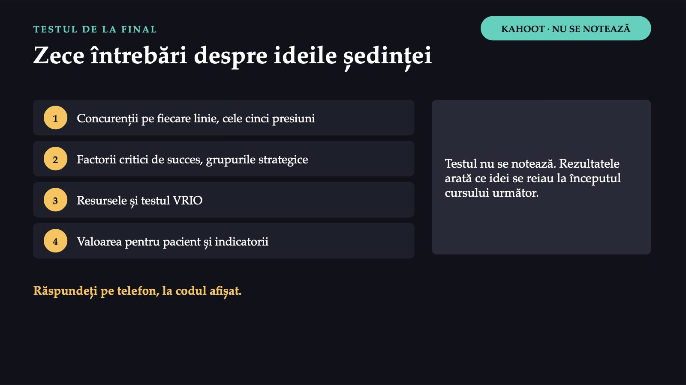
42 / 45Test formativ pe Kahoot, zece întrebări despre ideile ședinței. Testul nu se notează. Rezultatele arată ce idei trebuie reluate la începutul cursului următor.
Răspunsul apare după ședință
Răspunsul apare după ședință
Ce faceți diferit
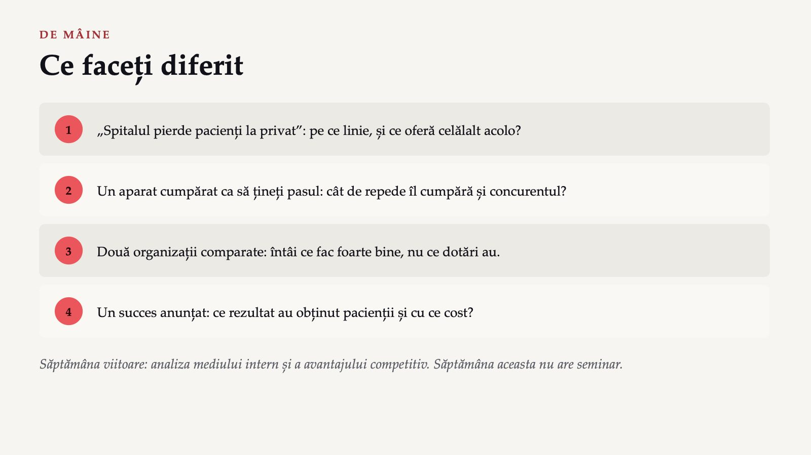
44 / 45Când auziți că spitalul pierde pacienți la privat, întrebați: pe ce linie de servicii, și ce oferă celălalt pe acea linie. Când vi se arată un succes, întrebați ce rezultat au obținut pacienții și cu ce cost, nu doar câți pacienți au fost. Săptămâna viitoare, cursul trece de la concurenți la organizația proprie: analiza mediului intern și a avantajului competitiv.
Trei întrebări pentru final
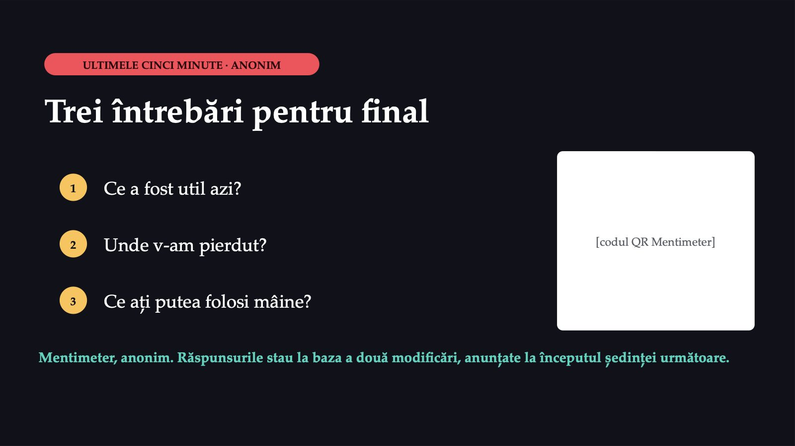
45 / 45Trei întrebări pentru titular, anonim, pe Mentimeter, prin codul QR de pe ultimul diapozitiv. Răspunsurile stau la baza a două modificări, anunțate la începutul ședinței următoare.
Săgeți sau spațiu: navigare · O: vedere de ansamblu · N: notele prezentatorului · F: ecran complet · Esc: închidere